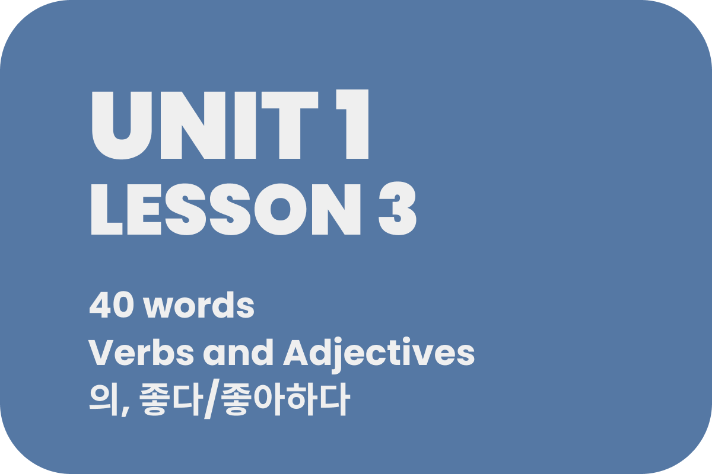

Lesson 3: In this lesson, you will learn how to make sentences using adjectives and verbs! We will start off with very simple sentences in this lesson, but later you will be making sentences complex enough to make your head explode. In addition to that, you will learn how to say “my” thing, or “his” thing by using the possessive particle, 의. Finally, we will take an initial look at the differences between 좋다 (to be good) and 좋아하다 (to like).